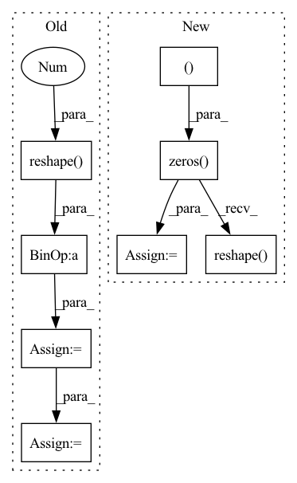

Pattern ID :22809

Before Change
self.state = self.state * self.alpha_mem
// add recurrent input
rec_input = self.hidden_layer(self.activations.reshape(batch_size, -1)).reshape(input_current[:, step].shape)
total_input = input_current[:, step] + rec_input
// Add the input currents which are normalised by tau to membrane potential state
self.state = self.state + total_input * (1-self.alpha_mem)
// Clip membrane potential that is too low
if self.threshold_low: self.state = torch.clamp(self.state, min=self.threshold_low)
self.tw = time_steps
self.spikes_number = output_spikes.abs().sum()
After Change
batch_size, n_time_steps, *other_dimensions = input_current.shape
rec_out = torch.zeros((batch_size, 1, *other_dimensions))
output_spikes = torch.zeros_like(input_current)
for step in range(n_time_steps):
total_input = input_current[:, step:step+1] + rec_out
// compute output spikes
output = self.lif(total_input)
output_spikes[:, step:step+1] = output
// compute recurrent output that will be added to the input at the next time step
rec_out = self.rec_weights(output.reshape(batch_size, -1)).reshape(input_current[:, step:step+1].shape)
return output_spikes
def reset_states(self, shape=None, randomize=False):
In pattern: SUPERPATTERN
Frequency: 3
Non-data size: 8
Instances
Fragment ID: 72412625
Project Name: synsense/sinabs
Commit Name: 8c263985e90ff782f31e98955f40fad6e906fdb7
Time: 2021-11-02
Author: gregor.lenz@synsense.ai
File Name: sinabs/layers/lif.py
M Class Name: LIFRecurrent
N Class Name: LIFRecurrent
M Method Name: forward(2)
N Method Name: forward(2)
M Parent Class: torch.nn.Module
N Parent Class: LIF
M File Name: sinabs/layers/lif.py
N File Name: sinabs/layers/lif.py
M Start Line: 165
M End Line: 192
N Start Line: 164
N End Line: 176
'>
Before Change
F, _, KL = weight.shape
_, _, OL = grad_output.shape
grad_out_reshaped = grad_output.data.transpose(1, 2, 0).reshape(F, -1)
grad_weight = (grad_out_reshaped @ x_cols.T).reshape(weight.shape)
grad_x_cols = weight.data.reshape(F, -1).T @ grad_out_reshaped
grad_x_cols.shape = (C, KL, N, OL)
grad_x = col2im(grad_x_cols, x.shape, 1, KL, 0, stride)
return grad_x, grad_weight
After Change
grad_weight = (grad_output.transpose(1, 2, 0).reshape(num_filters, -1) @ x_cols.T).reshape(weight.shape)
grad_x = np.zeros((batch_size, in_channel, signal_length), dtype=grad_output.dtype)
for k in range(output_length):
X = k % output_length
iX = X * stride
grad_x[:, :, iX:iX+kernel_length] += np.einsum("ik, kjy->ijy", grad_output[:, :, X], weight)
grad_x = grad_x.reshape((batch_size, in_channel, signal_length))
return grad_x, grad_weight
def conv2d_backward(grad_output, x, weight, x_cols, stride):
'>
Fragment ID: 72412690
Project Name: pabannier/nanograd
Commit Name: 442722b1830cdbf5fe8874edf3ecce602b3e9526
Time: 2021-02-02
Author: pierreantoine.bannier@gmail.com
File Name: nanograd/nn/ops_cpu.py
M Class Name: AnonimousClass
N Class Name: AnonimousClass
M Method Name: conv1d_backward(5)
N Method Name: conv1d_backward(5)
M Parent Class:
N Parent Class:
M File Name: nanograd/nn/ops_cpu.py
N File Name: nanograd/nn/ops_cpu.py
M Start Line: 224
M End Line: 234
N Start Line: 224
N End Line: 239
'>
Before Change
grad_out_reshaped = grad_output.transpose(1, 2, 3, 0).reshape(F, -1)
grad_weight = (grad_out_reshaped @ x_cols.T).reshape(weight.shape)
grad_x_cols = weight.data.reshape(F, -1).T @ grad_out_reshaped
grad_x_cols.shape = (C, HH, WW, N, OH, OW)
grad_x = col2im(grad_x_cols, x.shape, HH, WW, 0, stride) // Needs to be optimized
return grad_x, grad_weight
After Change
grad_weight = (grad_output.transpose(1, 2, 3, 0).reshape(num_filters, -1) @ x_cols.T).reshape(weight.shape)
grad_x = np.zeros((batch_size, in_channel, im_height, im_width), dtype=grad_output.dtype)
for k in range(output_height * output_width):
X, Y = k % output_width, k // output_width
iX, iY = X * stride, Y * stride
grad_x[:,:, iY:iY+kernel_height, iX:iX+kernel_width] += np.einsum("ik,kjyx->ijyx", grad_output[:,:,Y,X], weight)
grad_x = grad_x.reshape((batch_size, in_channel, im_height, im_width))
return grad_x, grad_weight
'>
Fragment ID: 72412692
Project Name: pabannier/nanograd
Commit Name: 442722b1830cdbf5fe8874edf3ecce602b3e9526
Time: 2021-02-02
Author: pierreantoine.bannier@gmail.com
File Name: nanograd/nn/ops_cpu.py
M Class Name: AnonimousClass
N Class Name: AnonimousClass
M Method Name: conv2d_backward(5)
N Method Name: conv2d_backward(5)
M Parent Class:
N Parent Class:
M File Name: nanograd/nn/ops_cpu.py
N File Name: nanograd/nn/ops_cpu.py
M Start Line: 243
M End Line: 248
N Start Line: 248
N End Line: 257